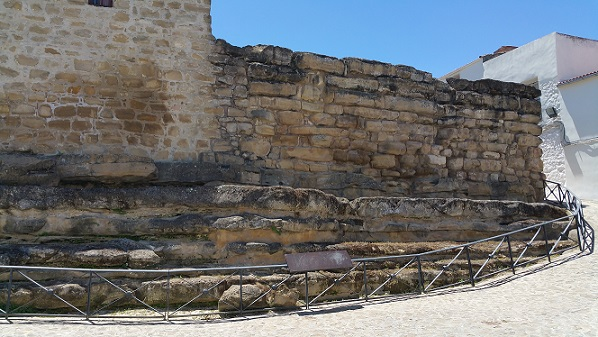

|
IBROS
Según algunos autores esta es la
antigua "Ibes" o "Ibris" de los oretanos.
La muralla ciclópea de Ibros primitivamente era un recinto cuadrangular
que rodeaba el perímetro del poblado del que hoy sólo conservamos una
esquina de 12 y 13 metros de largo. La fecha de su construcción se
estima entre los siglos II-I a.e.c., de época romana, pero con técnicas
constructivas propiamente íberas.
Sus enormes sillares están ensamblados sin mortero y poseen unas
dimensiones de 3,60 metros de longitud por y 1,70 de ancho.
De época romana destacan las villas como la del Cortijo del Álamo, la
del paraje del Horcajo y la del Corral del Manchego, donde también se
encontró una pequeña necrópolis.

Ver:
Murallas Romanas
|